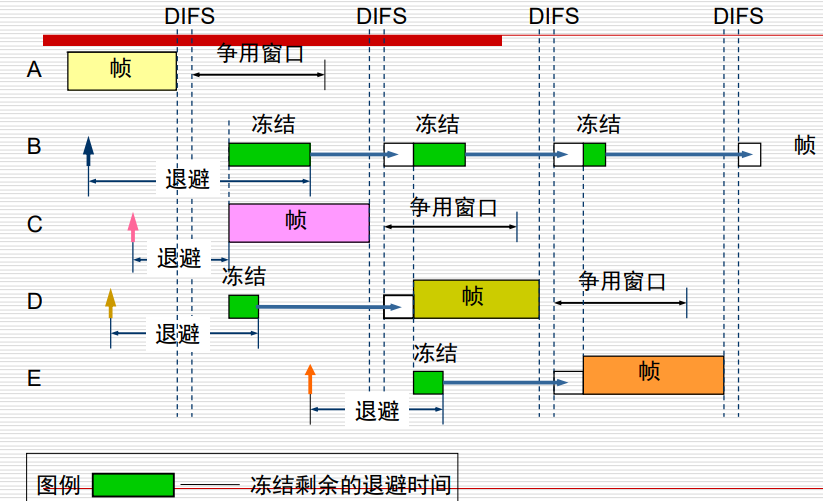

互联网计算
数据链路层
一、数据链路层概述
1、物理层和数据链路层区别
| 第一层 | 第二层 |
|---|---|
| 无法与上层通信 | 通过逻辑链路（Logical Link Control，LLC）与上层通信 |
| 无法确定哪台主机将会传输或接受二进制数据 | 通过 MAC 确定 |
| 无法命名或标识主机 | 通过寻址或命名过程来实现 |
| 仅仅能描述比特流 | 通过帧来组织/分组比特 |
2、数据链路层
数据链路层提供了：
- 网络介质访问
- 跨媒体物理传输
第二层协议明确了：
- 在链路上交换的数据格式
- 链路上的两个节点的行为
同时，在两端会校验帧是否正确，是则交付第三层，不是则丢弃。
3、局域网和数据链路
主要工作：
- 错误识别（notification）
- 网络拓扑（NetWork topology）
- 流控制（flow control）
4、第二层提供的服务
1、没有确认（acknowledgement）的无连接（connectionless）服务
2、有确认的无连接服务
3、有确认的连接服务
注意：无线连接比有线连接多确认的过程，并且两者都需要接给路由器，作为通信对象，由路由器转发。
5、常见的局域网介质访问控制
介质访问控制：（Media Access Control，MAC）
- 以太网（Ethernet）：逻辑总线拓扑（信息流在线性总线上）和物理星形或扩展星形（连线为星形）
- 令牌环（Token Ring）：逻辑环拓扑（信息流在一个环中）和物理星形拓扑（以星形连接）
- FDDI（光纤分布式数据接口）：逻辑环拓扑（信息流在一个环中）和物理双环拓扑（作为双环连接）,光纤作为传输介质，曾经很常用，后来被以太网有线接入逐渐替代
从上到下从0个环到2个环
6、介质访问控制方法
介质访问控制方法（Access Methods for Media-Access）
分为：静态划分信道和动态划分信道
静态划分信道（确定性轮流）：信道划分介质访问控制（轮流进行）
- 频分复用
- 时分复用
- 波分复用
- 码分复用
动态划分信道（非确定性MAC协议，也被称为争用式协议）：分为轮询访问（令牌传递协议）和随机访问：
- ALOHA协议
- CSMA协议（载波侦听多路访问）（Carrier Sense Multiple Access）
- CSMA-CD协议（带冲突检测的载波侦听多路访问（with Collision Detection））（重要考点，在下一部分详细讲）
- CSMA-CA协议（带碰撞避免的载波侦听多路访问（with Collision Avoidance））（用于无线网络）
确定性轮流：特殊令牌在环中循环，主机收到令牌时，可以夺取令牌（传输数据而不是令牌），当发送的帧返回到发送器时，发送器会发送新的令牌，帧从环中被移除。
非确定性轮流：信道可以共享，但是需要解决冲突问题。以太网允许网络设备为传输权进行仲裁（arbitrate）。
7、局域网数据传输方式
- 单播（unicast）-将单个数据包从源发送到网络上的单个目标
- 多播（multicast）-由发送到网络上特定节点子集的单个数据包组成，这些节点都有同样的进程进行响应
- 广播（broadcast）-由单个数据包组成，该数据包传输到网络上的所有节点。（广播的目的地址是 0x11111111）
二、带冲突检测的载波侦听多路访问 CSMA/CD
1、确定碰撞后的重传时间

2、逻辑链路控制 LLC 和介质访问控制 MAC 子层
IEEE将整个数据链路层分为两个子层：
- 逻辑链路控制（LLC）：过渡到网络层，即上文讲的可以与上层通信的部分
- 介质访问控制（MAC）：转换为媒体

MAC子层：位于数据链路层底部，以物理方面的最基本的寻址、传输、拓扑等为主
- 定义如何在物理线路上传输帧（frames）
- 处理物理寻址
- 定义网络拓扑
- 定义线路规则（discipline）
LLC子层：位于数据链路层上部，为上层网络层提供逻辑接口，主要负责逻辑上更高级的错误检测、流控制等等，以维护为主。
- 逻辑上标识不同的协议类型，封装，以兼容不同介质的访问
- 使用 SAP 标识符做发送的位置的标识
- 帧的类型取决于上层协议期望的标识符，对于上层服务进行支持
3、MAC子层
以字节为单位进行帧结构的描述，有802.3的规范和以太网的规范。
帧结构：

- 前文（preamble）：8个字节，前7个字节为1和0交替（前同步码），后1个字节为10101011（帧开始定界符），作用是告诉接收方要来数据了
- 目的地址、源地址（Dest.add,Source.add）:各自6个字节。
先看地址的好处：交换机等看到目的地址就可以进行判断，提高效率 - 长度（Length）:2个字节，指示数据字段的长度（FCS之前）
在以太网V2中被替换为类型字段，标志上一层使用的是什么协议（长度通过曼斯特彻编码结束后电压不会发生变化来判断数据字段结束位置） - 数据（Data）：里面包含了被封装起来的IP数据报的所有内容，长度为46-1500字节，（因为帧的大小至少为64字节，如果不满的话需要在数据中一直补0）；以太网规定，小于 64 字节的帧是由于冲突而终止的无效帧；最前面 8 个字段不算帧的内容
- FCS字段（frame check sequence）：4个字节，用于检验数据报是否传输没有出错，包含循环冗余校验（cyclic redundancy check）值。
详细规则：发送方先计算出CRC，结果附加到帧的尾部，然后接收方进行相同计算，判断两个CRC是否相同。
具体而言，发送方与接收方事先约定好一个除数，发送方现在数据后面补几个0，用这个数除以除数（模二运算），余数代替之前补的0，给接收方。接收方把这个数也除以除数，如果余数为0，就说明传输无差错。
FCS不一定保证数据的正确，但是概率低。CRC错误时有时候直接丢弃，有时候再校验一下。
最小帧长：
最小帧长 = 总线传播时延 * 数据传输速率 * 2
解释：由于CSMA/CD进行碰撞检测的步骤，如果一方发送数据时发现另一方也在发送数据给自己，自己就必须停止，说明发生了碰撞。而在自己发送数据后检测到碰撞时间最晚是当数据快发给对方时对方开始给自己发数据，也就是两倍的总线传播时延。因此只要能够保持2 * 时延的时间就保证了不碰撞。
4、LLC子层
逻辑链路控制（LLC）子层通过单个链路管理设备之间的通信
LLC 子层基有面向连接的，也有不面向连接的，也就是既可以是进行总线服务，也可以实现令牌环路
LLC现在基本已经被弃用了，原因之一是局域网的正确率比较高，不需要 LLC 来进行守护，避免拖累速度和效率，而这部分也已经被第四层完成了
LLC会将来自上层的数据包往前添加头部来封装，然后被MAC所接收，就好想LLC来自一个不同的子层一样。
5、MAC子层上的介质访问控制
（1）、MAC地址（硬件地址或物理地址）的表示**
MAC地址为48位，表示十二个十六进制数字（6个字节），在以太网MAC帧上存在的目的地址和源地址就是两个MAC地址。
前三个字节：由IEEE的注册管理机构RA分配，是组织唯一标识符（OUI），标识的是制造商或销售商。
- 可以一个厂商买多个OUI，也可以几个单位买一个OUI
- 第一个 bit 取 0 表示是一个单播地址（单个站地址），取 1 则是表示是一个多播地址（组地址）。
- 第二个 bit 取 0 表示是全球唯一地址（全球管理），取 1 则表示是一个本地唯一地址（本地管理）
后三个字节：由特定供应商提供，包括一些接口序列号。
（2）、以太网802.3广播
广播的目标MAC地址位全1（FFFF.FFFF.FFFF），所有设备都能收到地址并解析。
使用广播的情况：
- 目的地MAC未知
- 目的地是所有主机
广播会打断电台，也会产生广播风暴，因此我们不希望有很多广播。
（3）、以太网操作
以太网是广播地址，因此每个站都能看到帧，但是只有目的站（目标MAC地址匹配）才会相应，其他站则丢弃。
（4）、广播步骤
侦听传输数据，如果发生冲突时广播及jam信号（是一个 32bit 的全 1 的数据帧表示出现了冲突，并且所有帧听设备都会发送，与CSMA/CD协议相关），然后设备退回适当时间，重新传输。退回时间由特定回退算法决定。
碰撞发生：两个设备同时使用链路发送电信号，或多台主机同时进行组织数据帧进行发送
这种机制主要用于以太网的半双工模式，而在全双工模式下，冲突通常不会发生。
6、以太网的CSMA/CD

1、 首先设备要发送数据
2、 开始侦听链路是非忙，如果忙，则过一阵来再看看
3、 如果不忙，则开始准备发送
- 如果有错误，则到 9，表示有冲突发送，广播一个 jam sighnal，把自己尝试的次数 + 1（重发有一定限度）
- 尝试次数过多，会像上层协议传输网络不可用
- 尝试次数还可，则到 13 计算一个回退时间，来再次尝试，回退时间单位，会保证 A 和 D 的时间差能保证第一个人已经用完电路来避免冲突。
4、 如果没有错误，则一直传输到结束为止
三、无线局域网和CSMA/CA
1、无线局域网
特征：基于单元的通信，电台发送的信号只能被附近的电台接收，短距离传输
无线局域网标准：IEEE 802.11
CSMA/CA过程

发送站点发送数据前，通过控制短帧刺激接受站点发送应答短帧，使周围站点监听到该帧并在一段时间内避免数据发送。上图为基本过程
- 为避免冲突，所有站点在完成一个事务后必须等待一段时间才能进行下一个动作，这个时间被称为 IFS，具体取决于帧的类型。
- SIFS（Short interframe space）：短帧间间隔 28us，用于本设备接受发送状态转换，不足够源站接受 CTS
- DIFS（Distributed Inter-frame Spacing）：分布协调功能帧间间隔 128us（多个节点进行协调）
- 应答 CTS（Clear to Send），等待 SIFS（Short interframe space）后发送数据
- NAV（网络分配向量）：网络协调时间，用于在给定的时间内推迟接入。
基本过程：
- A 向 B 发送 RTS（Request To Send，请求发送）帧，A 周围的站点在一定时间内不发送数据，以保证 CTS 帧返回给 A；
- B 向 A 回答 CTS（Clear To Send，清除发送）帧，B 周围的站点在一定时间内不发送数据，以保证 A 发送完数据；
- A 开始发送
- 若控制帧 RTS 或 CTS 发生冲突，采用二进制指数后退算法等待随机时间，再重新开始。（A 和 C 同时发送 RTS）
一般来说，退避时间短的设备先传输，并且发现冲突所有设备同时退避
虚拟载波监听：

图中表示当站点A发送数据时，B,C,D也想发送数据（向上箭头表示），发现信道忙，于是各自退避一段时间。在退避时，每隔一段时间检测当前信道是否忙，如果是空闲的，那么就继续倒计时；如果是信道忙碌，那么就冻结退避计时器的剩余时间。注意：在初次执行退避算法的时候是不会冻结的，只有当信道从忙变成空闲之后其他人再次发送帧使得信道忙碌之后才会开始冻结。
所有帧在发送之前都必须等待一段DIFS争用窗口，如果这个帧不是要发送的第一个帧，那么还必须等待一段争用窗口的时间。（也可以理解为，争用窗口是在每个帧发送完毕之后都必须执行的一段时间，因为这段时间不管需不需要继续发送数据，都只能保持什么都不做）。
上图中退避的那一块表示的是假如没有冻结，那么理论上应该结束退避的时间。因此，图中绿色部分代表的就是实际冻结了的时间，意味着在冻结完毕继续退避计时后还需要再退避相当于冻结的那一部分的时间。而在这个时候有可能信道又会变忙，因此有可能会再次进入冻结。一旦退避时间清零之后，就会立即开始发送帧。
一般，在信道从忙变为空闲之后，每个站点必须先经过一段DIFS的时间才可以继续计时。在首次发送数据时，也必须先等待一段DIFS时间。
以下是CSMA/CA算法的总结：
- 若站点最初有数据要发送（不是重传），且信道空闲，那么先等待DIFS时间，然后发送数据帧。
- 否则，站点执行退避算法。一旦信道忙（在空闲之后重新变为忙），就冻结退避时间，否则就继续倒计时。
- 退避计时器减小到0时，站点立即发送数据帧，等待确认。
- 如果收到确认，那么说明接收成功。这时如果要发送第二帧，就从第二点开始。
- 如果没有收到确认，那么必须重传，直到收到确认或在数次失败后放弃。
使用退避算法的情况：
- 发送第一个帧前，信道忙；
- 重传帧或再次发送第二帧。
实际数据传输率
1、当源节点发送帧时，接收节点将返回肯定确认（ACK）。
- 这可能导致消耗 50% 的可用带宽（bandwidth）。
- 在额定为 11 Mbps 的 802.11b 无线局域网上，这会将实际数据吞吐量降低到最大 5.0 到 5.5Mbps。
2、网络性能也会受到信号强度的影响 - 随着信号变弱，可以调用自适应速率选择（ARS）
- 信号会受到距离影响，越远信号越弱，功率越低，带宽不能稳定到初始带宽
- 传输单元会将数据速率从 11 Mbps 降低到 5.5Mbps，从 5.5 Mbps 降低到 2 Mbps 或 2 Mbps 到 1 Mbps。
2、无线网络拓扑

无线网络的基础设施：
- BSS：基本服务集，包含一个基站（BS）和几个无线主机，为星型拓扑
- AP：接入点，是每个BSS的基站，星型拓扑的中心。
- 移动站：BSS中除AP以外的站，可以在BSS中互相通信
所有主机都可以在本地BSS中互相通信。
AP连接到有线局域网，提供Internet的访问和有线网络的连接。
BSA：一个基本服务集所覆盖的地理位置，范围直径一般不超过100米。
一个 BSS 可以通过分发系统（DS）连接到另一个 BSS，并构造一个扩展服务集（ESS）
如果一个移动站A想要和另一个不同BSS中的移动站B通信，那么就必须经过两个接入点AP1和AP2，并通过门户Portal传输（有线），之后到达。
一个BSS中往往安装有多个AP，但只有一个能够作为基站，与其他BSS建立联系。移动站可以选择一个信号最强的AP建立连接。当移动站移动时，接入点AP可能会发生改变。
移动站与AP建立关联的方法
- 主动扫描：移动站主动发出探测请求帧，，等待接入点发回的探测响应帧。（探测请求包含希望加入的网络的服务及标识符SSID，找到具有相同SSID的AP时该AP发出探测响应）
- 被动扫描：移动站等待接收接入点AP周期性发出的信标帧。（信标管理帧中包含各自的SSID信息，如果找到了尝试加入的SSID，就尝试加入网络）。
3、无线局域网的帧结构
有三种类型框架：
-控制帧
- 管理帧
- 数据帧
无线数据帧和802.3帧的有效载荷为1500字节，但是以太帧不能超过1518字节，而无线帧可达2346字节。通常为了连接到以太网，无线网络帧也被限制为1518字节。
数据帧结构：

MAC首部共30字节，其中的最常见的重要部分：
- 去往AP和来自AP：如果去往AP设为1表示这个帧是去往AP的，来自AP同理。
-一共涉及到四个地址，其中地址4用于自组网络。这些地址的内容随着去往AP和来自AP的值而改变，但是通常都是目的地址，源地址，AP地址的排列组合。通常，地址1表示当前要去的地址，地址2表示来自的上一个站点的地址，地址3则是剩下的一个地址。 - 持续期：用于CSMA/CA设定最长这个帧能存在的时间，类似一个计时器。
地址与AP的具体关系如下：
| 去往AP | 来自AP | 地址1 | 地址2 | 地址3 | 地址4 |
|---|---|---|---|---|---|
| 0 | 1 | 目的地址 | AP地址 | 源地址 | ———— |
| 1 | 0 | AP地址 | 源地址 | 目的地址 | ———— |
4、为什么需要CSMA/CA
可能发生在WLAN中，无法实验CSMA/CD解决的冲突：
- 隐藏站问题：A和C无法检测到对方各自的信息，以为信道空闲，于是同时向B发送数据，结果发送冲突
- 暴露站问题：B在给A发送信号时被C接收到，C错以为信道忙，于是不敢给D发送数据

为什么我们不使用CSMA/CD？
- 无限信号强度动态范围巨大，接收信号强度远小于发送信号强度，因此实现碰撞检测，不间断检测信道的花费会过大。
- 碰撞的发生无法避免，即使硬件上已经实现了无限局域网碰撞检测。
5、多路复用机制
以太网：
- 信号被传输到电缆上的所有站。
- 发送站检测到冲突。
- 一次只能在信道上发送一个有效帧。
WLAN 无线网络：
- 信号通过电缆传输到发送站附近的站（相邻,不可以跨越有效距离发送）
- MAC 协议必须尽最大努力确保仅发送站靠近接收站，发送方只能发送一路信号给接受方，不能有多个发送方发送信号给一个接受点
- 接收方检测确定冲突。
- 一次可以在通道上传输多个有效（effective）帧,不可以产生冲突。
6、WLAN 和 Ethernet 区别
| Ethernet | WLAN |
|---|---|
| 信号被传输到连接在线缆上的所有站点上 | 信号只被传输到接近发送站点的站点 |
| 接受站点检测冲突 | |
| 只会有一个有效帧在信道上传播 | 会有多个有效帧同时在信道上传播 |
| MAC 协议必须尽可能保证只有发送站点接近接收站点 |
四、第二层设备
1、NICs 网卡
NIC 执行重要的第 2 层数据链路层功能：
- 逻辑链接控制-与计算机上层通信
- 媒体访问控制-提供对共享访问媒体的结构化访问
- 命名-提供唯一的 MAC 地址标识符
- 成帧-封装过程的一部分，打包比特以进行传输。
- 信号-使用内置收发器创建信号并与媒体接口（也有第一层功- 能，变为 01 信号）
2、网桥（Bridges）
1、网桥将流量划分为多个部分，并根据 MAC 地址而不是协议对流量进行过滤。
2、网桥可以通过减少较大的冲突域来提高网络性能。
- 大的冲突域变少，碰撞和冲突会变少，但是网桥会成为一个瓶颈。（网桥将数据帧检验存储再转发）
- 导致延迟提高 10-30%
3、在从网络的一个网段到其他网段的流量较低的情况下，网桥最有效,当网段之间的流量变大时，网桥会成为瓶颈（bottleneck），并减慢通信速度。
4、一般是处理两个不同的分段，相对比较简单。
5、是一种储存转发（store-and-forward）设备，因为它必须接受整个帧并在转发前校验 CRC（事实上这必要性不大）
透明网桥原理：

拥有一个转发表，记录不同站点的站地址和对应的接口，即想要到达某个站点需要发送到哪个接口的网段下。
“透明”指局域网中的站点并不知道所发送的帧将经过哪几个网桥，因为网桥对各站来说是看不见的，可以即插即用
原理：
- 网桥每收到一个帧，就可以知道这个帧来自的接口，记下其源地址和进入网桥的接口，写入转发表。
- 在收到一个新的帧时，在转发表中匹配此帧的目的地址，找到对应的接口并转发。
- 同时还要写入帧进入网桥的时间，因为站点状态（拓扑，适配器，工作状态等）会经常变化，使得当前信息是最新信息。
- 如果第二步匹配不到，那么需要向网络上的所有设备发送广播。网桥始终会转发这些广播。
广播过多会导致广播风暴，并且可能导致：
- 网络延时（network time-outs）
- 交通减速（traffic slowdowns）
- 低于可接受的性能
源路由网桥
发送帧时将详细的路由信息放在帧的首部中,从而使每个经过的网桥都了解帧的路径，在令牌环网络中被广泛使用
原理：源站以广播方式向目的站发送一个发现帧，每个发现帧都记录所经过的路由。发现帧到达目的站时就沿各自的路由返回源站。源站在得知这些路由后，从所有可能的路由中选择出一个最佳路由。凡从该源站向该目的站发送的帧的首部，都必须携带源站所确定的这一路由信息。
3、交换机
执行两个基本操作：
- 切换数据帧：在输入介质（medium）上接收帧，然后将其传输到输出介质
- 维护交换操作：交换器建立和维护交换表并搜索循环。 路由器构建并维护路由表和交换表。（STB 协议避免回路）
交换是一项通过减少流量和 alleviates congestion 来缓解以太网 LAN 拥塞（alleviates congestion）的技术。
- 创建专用（dedicated）的网段或点对点连接，并将这些网段连接到交换机内的虚拟网络中。
- 之所以称为虚拟电路，是因为它仅在两个节点需要通信时才存在，并且在交换机内建立。网桥内部有一个高带宽的总线（一般内部带宽是接口带宽的 10 倍）
- 您可以将每个交换机端口视为一个微桥（micro-bridge）。该过程称为微分段（microsegmentation）。
- 每个交换机端口将介质的全部带宽提供给每个主机
交换机不能划分广播域。（端口->所有端口转发）（连接到交换机的所有主机仍位于同一广播域中）
带宽利用率可以接近 100%
交换机连接的是一个局域网，而路由器连接的是不同局域网。
交换机划分了冲突域
转发的速度明显加快，因为它们在硬件中进行切换，而网桥在软件中进行切换。
共享以太网网络的容量不足其全部容量的 30% 至 40% 时，其性能最佳。
一些交换机支持直通交换，这减少了延迟和延迟，而网桥仅支持存储转发交换（存储转发，存下来检验转发）。
直通交换：快速转发，不做校验，只看前 6 字节的 MAC 地址。而局域网网速比较快，传输速率高，网线比较短，可以认为是基本没有错误的，所以可以进行直通转发
路由器划分了冲突域
- 创建较小的碰撞域
- 创建较小的广播域：除非经过编程，否则路由器不会转发广播。
路由器可以用作网关，用于连接不同的网络媒体和不同的 LAN 技术。
是根据逻辑地址（IP 地址）进行转发，不再是 MAC。